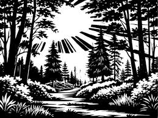

Saltar al otro lado del puente
Con un gran esfuerzo, Kael da el primer salto, seguido por los demás. Azura es la última y justo cuando salta, una piedra se desprende y se hiere la pierna. Logran escapar, pero el grupo queda dividido.
Azura decide continuar sola con dificultad, determinada a cumplir la misión.
Fin de esta aventura.